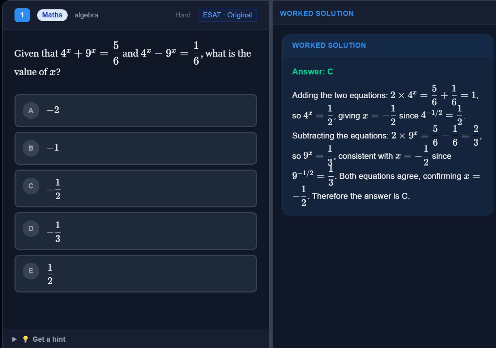
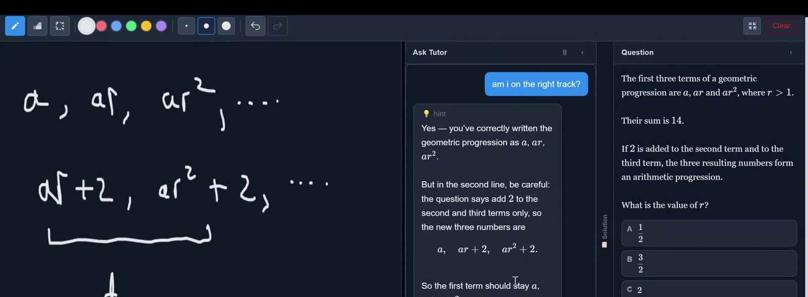

2026 · oxcel.xyz
Oxcel is a revision platform for UK university entrance tests: TMUA, ESAT, MAT, PAT, NSAA and Oxbridge interviews. I built it and launched it myself, and it has paying subscribers.
The problem it solves is simple. Each of these exams only has a few years of past papers, and strong applicants run out of them long before the test. Oxcel lets you keep going: you can ask for new questions on any topic at any difficulty, written in the style of the exam you’re sitting, with diagrams, graphs and tables where the question needs them.
The hard part isn’t generating questions, it’s trusting them. A language model will happily write a question whose “correct” option is wrong, and a wrong answer in a maths question is worse than no question. So every generated question goes through a pipeline before anyone sees it:
| step | what happens |
|---|---|
| 1. examples | pick real past-paper questions on the same subject, topic and difficulty to show the model the style |
| 2. draft | the model writes the question, five options, a worked solution, and a short Python program that computes the answer |
| 3. check | structural checks (five distinct options, answer label matches its text), with one repair attempt |
| 4. verify | run the Python, then match its output to the options. It must match exactly one option, and that option must be the one the model claimed |
| 5. dedupe | reject anything too close to a recently generated question |
Any failure at step 4 throws the whole draft away and starts again. There’s no repair, because a wrong computed answer means the question itself is suspect.

A generated question (“ESAT · Original” rather than a past paper) that made it through, with its worked solution.
Step 4 is the interesting one. The model is much better at writing a few lines of code that compute an answer than at doing the arithmetic in its head, so the code becomes the check. Matching the result to an option is harder than it sounds, because “0.5”, “1/2” and “50%” are the same answer. The matcher tries the cheapest comparison first:
T0 normalised exact string compare
T1 numeric parse with relative tolerance (units, sci notation, fractions)
T2 sympy symbolic equivalence (surds, pi, exact forms)
T3 optional LLM fallback (only if T0 to T2 match nothing)If two options both match, the question fails outright. A question with two equal options is broken, and guessing could approve a wrong answer.
The model’s code runs in a sandbox: a size limit, a static check of the syntax tree (only maths imports like math, sympy and fractions, no open or eval), then a separate process with CPU, memory and file limits that is killed on timeout. The code comes from my own model rather than from users, so the main risk is accidents like infinite loops, and the defences are cheap and layered rather than bulletproof.
To find out whether the checker can be trusted, I ran it on past-paper questions that have official answer keys. The model writes code from the question alone, never seeing the key, and the pipeline’s chosen option is compared with the official answer. The disagreements are the useful part, because each one is either the model misunderstanding the science or an error in my own extracted copy of the past papers.
There are still failures it can’t catch, like a question that is technically correct but nothing like the real exam. That’s why the question bank is also reviewed by us, and users can report a question with one click.
Figures are split the same way. Tables and simple graphs are described by the model as structured data and drawn as SVG, so their numbers are exact. Only genuinely complex diagrams go to an image model.
Around the questions there’s a timed past-paper mode, a quick mode that steers towards your weak topics, progress tracking, and a tutor that reads your working on an on-screen whiteboard and gives a hint without giving away the answer.

The tutor reads the handwritten working on the left and points out the slip (adding 2 to the first term as well) without solving the question.
The rest is a fairly standard SaaS setup, split so each service does one job:
| service | what it does |
|---|---|
| Vercel | hosts the Next.js frontend and its API routes. The browser only ever talks to these, so secret keys stay on the server |
| Render | runs the Python (FastAPI) backend that generates, verifies and solves questions |
| Supabase | Postgres database and accounts, with email, Google and GitHub sign-in |
| Stripe | checkout, free trials, plan changes and the billing portal |
| Resend | transactional email, like replies to feedback and a discounted win-back offer when someone cancels |
A few patterns did most of the work. Stripe is the source of truth for billing: the app never decides on its own that someone has paid. Stripe sends signed webhooks (checkout completed, subscription created, updated or cancelled), the handler checks the signature, and only then updates the subscriptions table. A single middleware runs before every page, refreshes the login session, and sends people to the login page, the pricing page or a suspension notice as needed.
In the database, row-level security means each user can only read their own rows, and anything that writes billing or usage data goes through a server-only admin client. The schema changes through versioned SQL migrations (17 so far). Model costs are capped with a rolling token budget per user, tracked in the database. GitHub Actions runs on every push: the sandbox and answer-matcher tests, a check of the question bank’s integrity, then a typecheck and full build of the frontend. The build runs with no secrets at all, because every external service is optional in code and the app falls back to guest mode without it.
The biggest lesson was that once people are paying, reliability matters more than features. A new feature that works most of the time is worth less than the existing ones working every time.